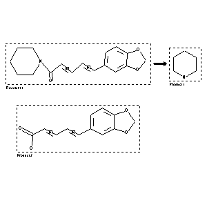

|  |
| FA | RX(1); FLST(1); RX(1) |
Reaction (1 of 1)
| Reaction ID | 5709607 |
| Reactant BRN | 90741 |
| Reactant | alcoholic KOH-solution; 1-trans,trans-piperinoyl-piperidine |
| Product BRN | 102438; 85624 |
| Product | piperidine; trans,trans-piperinic acid |
| No. of Reaction Details | 1 |
Reaction Details (1 of 1)
| Reaction Classification | Chemical behaviour |
| Comment | Handbook |
| Citation Pointer | 960841; Journal; v. Babo; Keller; JPCEAO; J.Prakt.Chem.; <1> 72; 1857; 55; JCVWAE; Jahresber.Fortschr.Chem.Verw.Theile Anderer Wiss.; 1857; 413;503101; Journal; Fittig; Mielck; JLACBF; Justus Liebigs Ann. Chem.; 152; 1869; 52, 54; JLACBF; Justus Liebigs Ann. Chem.; 172; 1874; 140, 152; |
Reference (1 of 2)
| Citation Number | 503101 |
| Document Type | Journal |
| Authors | Fittig; Mielck |
| CODEN | JLACBF; JLACBF |
| Journal Title | Justus Liebigs Ann. Chem.; Justus Liebigs Ann. Chem. |
| (Series) Volume | 152; 172 |
| Publication Year | 1869; 1874 |
| Page | 52, 54; 140, 152 |
Reference (2 of 2)
| Citation Number | 960841 |
| Document Type | Journal |
| Authors | v. Babo; Keller |
| CODEN | JPCEAO; JCVWAE |
| Journal Title | J.Prakt.Chem.; Jahresber.Fortschr.Chem.Verw.Theile Anderer Wiss. |
| (Series) Volume | <1> 72 |
| Publication Year | 1857; 1857 |
| Page | 55; 413 |